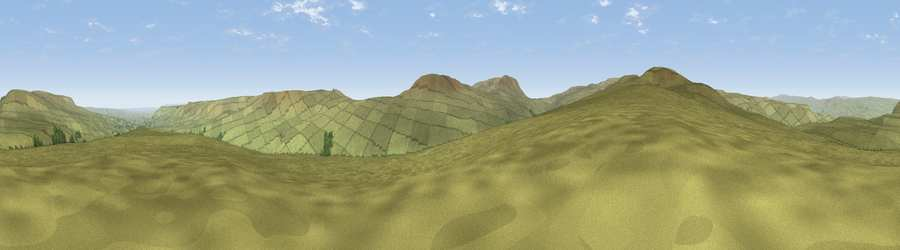

Denman's Hill
#13392 in England · top 25% of its area beats it · near CarltonThe view, rendered

A 360° render of this exact spot computed from the terrain model, tree cover and land cover — summer colours, afternoon light, calibrated against photographs of famous viewpoints. Real trees, hedges and buildings will differ in detail.
The panorama
Grey silhouette: terrain skyline in each direction (720 bearings, Earth curvature and refraction included). Dashed green: skyline with trees (+15 m) and buildings (+8 m) as obstacles. Blue strip: how far the ground is visible on each bearing.
Where the view opens
Wedge length = distance to the farthest visible ground on that bearing (vegetation-aware). Rings at 10, 25 and 50 km.
What fills the view
99% grassland ·
Angular shares of the visible panorama (visual magnitude), not map area. Landscape diversity 0.03 (0–1 Shannon).
Key numbers
More beautiful places nearby
The staircase of upgrades: each row has a higher view potential than everything closer. Driving times are estimates from straight-line distance, calibrated against real road routing — check an actual route before setting out.
| Place | Direction | Drive | Score |
|---|---|---|---|
| Viewpoint c9615_8020 | W · 2 km | ~4 min | 68.3 |
| Viewpoint c9553_8056 | S · 3 km | ~8 min | 74.9 |
| Viewpoint near Kettlewell | SSW · 5 km | ~12 min | 76.6 |
| Viewpoint near Buckden | WSW · 7 km | ~14 min | 77.3 |
| Viewpoint near East Witton | ENE · 12 km | ~23 min | 77.8 |
| Whernside | W · 28 km | ~45 min | 79.9 |
| Viewpoint near Kirby Knowle | E · 43 km | ~63 min | 80.5 |
| Beacon Hill | ENE · 47 km | ~68 min | 84.7 |
54.22404, -1.96431 · source: osm peak · position refined by local search. Computed location — check access rights before visiting.